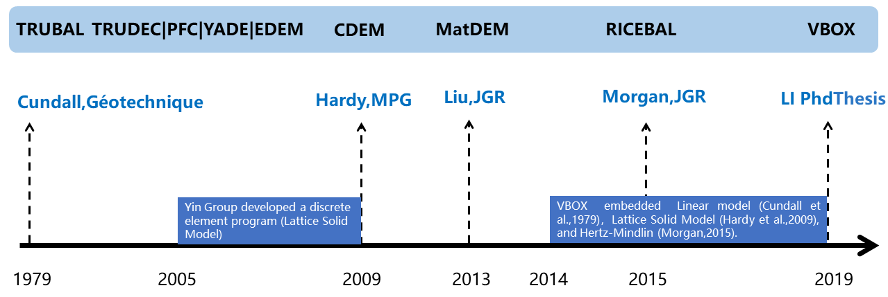

Linux Users
Open terminal, login VBOX(ZDEM) cluster hpcc.nju.edu.cn , run
vbox -v
VBOX(ZDEM) Manual
- VBOX (ZDEM) 1.4：

Series and milestones of DEM papers and programs
During the development of VBOX(ZDEM), We referred to a large number of materials, i.e., Linear model (Cundall et al.,1979)，Lattice Solid Model (Hardy et al.,2009; Liu et al.,2013 ), and Hertz-Mindlin Morgan (2015), TRUBAL, RICEBAL, PFC2D users’ manual (Itasca,2004), YADE. If you are using VBOX for numerical simulations, you need to properly cite the appropriate literature.
Reference materials of VBOX (ZDEM):
- Script format: TRUBAL; RICEBAL; Lian et al.,1994; PFC2D users’ manual
- Linear model: TRUBAL; YADE; PFC2D users’ manual; Cundall et al.,1979
- Lattice Solid Model: Hardy et al.,2009; Liu et al.,2013; Li et al.,2021
- Hertz-Mindlin model: RICEBAL; YADE; PFC2D users’ manual; Morgan,2015
- Parallel computing: OpenMP
- Contact list: Lian et al.,1994; Wang et al.,1991; Wang et al.,1996
- Post-processing: The post-processing scripts and algorithms (GMT and MATLAB codes) of Julia K. Morgan; Morgan,2015
References
- TRUBAL https://hmakse.ccny.cuny.edu/software-and-data/
- DICE2D http://www.dembox.org/
- YADE https://yade-dem.org/doc/
- MatDEM http://www.matdem.com/
- Cundall, P. A., and O. D. L. Strack. (1979). A discrete numerical model for granular assemblies. Geotechnique, 29(1), 47–65.
- Wang Y. J., Xing J. B. (1991) Discrete element method and its application in rock and soil mechanics. Shenyang: Northeast institute of technology press (in Chinese)
- Lian G., Thomton C. and Kafui D. (1994). TRUBAL - A computer program for modelling particle assemblie. Aston University. UK
- Wang Y J, Liu L F. (1996) Formulation of a three-dimensional discrete element model-trudec system. Chinese Journal of Rock Mechanics and Engineering. 15(3): 201-210. (in Chinese)
- Itasca. (2004). PFC2D users’ manual (version 3. 1). Itasca Consulting Group, Inc., Minneapolis.
- Hardy S., et al (2009) Deformation and fault activity in space and time in high-resolution numerical models of doubly vergent thrust wedges. Marine and Petroleum Geology 26:232-248.
- Liu, C., Pollard, D. D., and Shi, B. (2013a). Analytical Solutions and Numerical Tests of Elastic and Failure Behaviors of Close-Packed Lattice for Brittle Rocks and Crystals. Journal of Geophysical Research: Solid Earth 118, 71–82.
- Morgan J. K. (2015) Effects of cohesion on the structural and mechanical evolution of fold and thrust belts and contractional wedges: Discrete element simulations. Journal of Geophysical Research: Solid Earth 120:3870-3896.
- Li, C. S. (2019). Quantitative Analysis and Simulation of Structural Deformation in
the Fold and Thrust Belt Based on Discrete Element Method. Doctor Thesis.
Nanjing, China: NanJing University.(in Chinese with English abstract) Download Latest revision Password
zdem - LI C.S., YIN H.W.*, et al. (2021) Calibration of the discrete element method and modelling of shortening experiments. Front. Earth Sci. 9:636512.